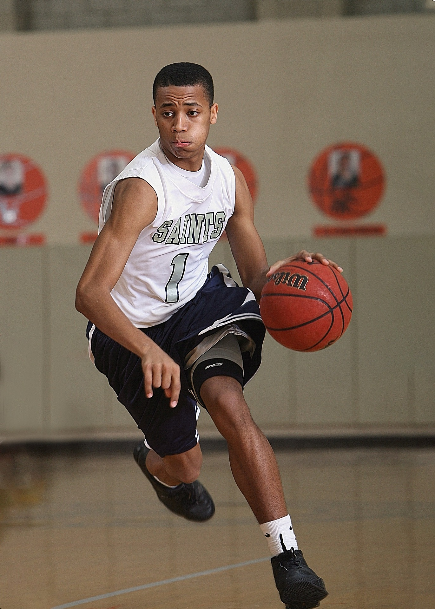
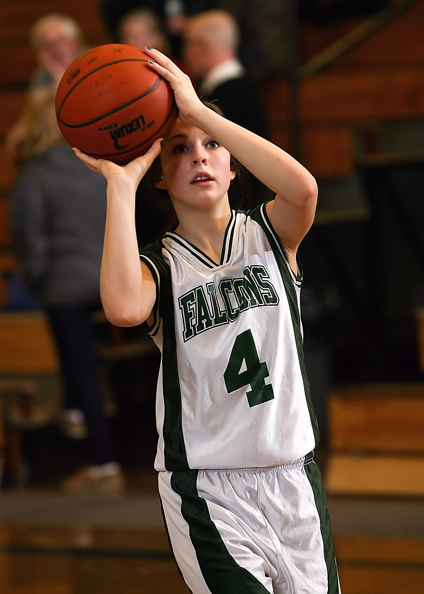

Michael Jordan
- 
- Geburtstag
- 17. Februar 1963
- Größe
- 198 Zentimeter
- Position
- Shooting Guard
- Erfolge
-
- Olympia für die USA
- Goldmedaille in 1984 (in Los Angeles)
- Goldmedaille in 1992 (in Barcelona)
- NBA Meisterschafts-Siege
- in 1991 (im Verein: Chicago Bulls)
- in 1992 (im Verein: Chicago Bulls)
- in 1993 (im Verein: Chicago Bulls)
- in 1996 (im Verein: Chicago Bulls)
- in 1997 (im Verein: Chicago Bulls)
- in 1998 (im Verein: Chicago Bulls)
- NBA allgemein
- 5x MVP (1988, 1991, 1996, 1998)
- 14x All-Star (1986-1993 & 1996-1998)
- 3x All-Star Game MVP (1988, 1996, 1998)(
- 10x Scoring Titel (1987-1993 & 1996-1998)
- 3x Steals-Leader (1988, 1990, 1993)
- Auszeichnungen
- Weltsportler des Jahres 1992 (L'Équipe)
- seit 2015 in der FIBA Hall of Fame
- Olympia für die USA
LeBron James
- 
- Geburtstag
- 30. Dezember 1984
- Größe
- 206 Zentimeter
- Position
- Small Forward
- Erfolge
-
- Olympia für die USA
- Bronzemedaille in 2004 (Athen)
- Goldmedaille in 2008 (Peking)/li>
- Goldmedaille in 2012 (London)
- NBA Meisterschafts-Siege
- in 2012 (Verein: Miami Heat)
- in 2013 (Verein: Miami Heat)
- in 2016 (Verein: Cleveland Cavaliers)
- in 2020 (Verein: Los Angeles Lakers)
- NBA allgemein
- 4x MVP (2009, 2010, 2012, 2013)
- 4x Finals MVP (2012, 2013, 2016, 2020)
- NBA Scoring Champion in 2008
- Auszeichnungen
- Athlete of the Year 2020 (Time-Magazine)
- Lieblingssportler bei den Kids' Choice Awards 2013
- Olympia für die USA
Berichte zu vergangene Veranstaltungen
EuropaCup 2022
Im Finale des EuroCups 2021/22 gewann Virtus Bolgna gegen Bursasport Basketbol. Statt fand es in Italien, am 11.05.2022. Dies ist auch der erste Titel der itlaienischen Mannschaft, welchen sie mit 80 zu 67 Punkten gewannen. Vorher setzten sie sich mit 17 Punkten Differenz gegen den Gegner MoraBanc Andorra im Halbfinale durch. Ein knappes Spiel lieferte sich Bursasport Basketbol gegen den KK CEdevita Olimpija im Viertelfinale, wobei sie 85 zu 83 spielten. Etwas besser lief es neben der erfolgreichen Gruppenphase im Achtelfinale gegen KK Partizan, mit einem Vorsprung von 8 Punkten gewannen sie auch hier.
Pellentesque porttitor, velit lacinia egestas auctor, diam eros tempus arcu, nec vulputate augue magna vel risus. Cras non magna vel ante adipiscing rhoncus. Vivamus a mi. Morbi neque. Aliquam erat volutpat. Integer ultrices lobortis eros. Pellentesque habitant morbi tristique senectus et netus et malesuada fames ac turpis egestas. Proin semper, ante vitae sollicitudin posuere, metus quam iaculis nibh, vitae scelerisque nunc massa eget pede. Sed velit urna, interdum vel, ultricies vel, faucibus at, quam. Donec elit est, consectetuer eget, consequat quis, tempus quis, wisi. In in nunc. Class aptent taciti sociosqu ad litora torquent per conubia nostra, per inceptos hymenaeos. Donec ullamcorper fringilla eros. Fusce in sapien eu purus dapibus commodo. Cum sociis natoque penatibus et magnis dis parturient montes, nascetur ridiculus mus. Cras faucibus condimentum odio. Sed ac ligula. Aliquam at eros. Etiam at ligula et tellus ullamcorper ultrices. In fermentum, lorem non cursus porttitor, diam urna accumsan lacus, sed interdum wisi nibh nec nisl.
Europameisterschaft Herren 2022
Da die Olympischen Sommerspiele von 2020 auf 2021 verschoben wurde, aufgrund der Corona-Pandemie, wurden auch die Europameisterschaft der Herren um ein Jahr verschoben. Sowohl in Deutschland, Georgien, sowie Italien und Tschechien wurden die Spiele der 24 Teilnehmer ausgetragen. Sieger war dabei Spanien, welche mit 88 zu 76 Punkten gegen Frankreich im Finale gewannen. Am 18. September startete Spanien mit einem großen Vorsprung in das erste Viertel, trotz der nur geringen Punktedifferenz im zweiten und dritten Viertel gelang Frankreich es auch im letzten Viertel nicht mehr den Vorsprung einzuholen. Deutschland spielte am gleichen Tag um den 3. Platz gegen Polen und gewann nach Punktevorsprüngen, in der ersten Halbzeit und dem letzten Viertel.
Pellentesque porttitor, velit lacinia egestas auctor, diam eros tempus arcu, nec vulputate augue magna vel risus. Cras non magna vel ante adipiscing rhoncus. Vivamus a mi. Morbi neque. Aliquam erat volutpat. Integer ultrices lobortis eros. Pellentesque habitant morbi tristique senectus et netus et malesuada fames ac turpis egestas. Proin semper, ante vitae sollicitudin posuere, metus quam iaculis nibh, vitae scelerisque nunc massa eget pede. Sed velit urna, interdum vel, ultricies vel, faucibus at, quam. Donec elit est, consectetuer eget, consequat quis, tempus quis, wisi. In in nunc. Class aptent taciti sociosqu ad litora torquent per conubia nostra, per inceptos hymenaeos. Donec ullamcorper fringilla eros. Fusce in sapien eu purus dapibus commodo. Cum sociis natoque penatibus et magnis dis parturient montes, nascetur ridiculus mus. Cras faucibus condimentum odio. Sed ac ligula. Aliquam at eros. Etiam at ligula et tellus ullamcorper ultrices. In fermentum, lorem non cursus porttitor, diam urna accumsan lacus, sed interdum wisi nibh nec nisl.
Weltmeisterschaft Damen 2022
Die Weltmeisterschaft der Damen gewann im letzten Jahr erneut das US-amerikanische Team. Anfang Oktober setzten sie sich im Finale gegen China deutlich durch, sie erzielten einen Punktevorsprung von 22 Punkten. China selbst war nur knapp mit einem 61 zu 59 gegen Kanada im Halbfinale durchgekommen, während der Favorit gegen Kanada 83 zu 43 ins Finale einzog. Im Viertelfinale sorgte die USA für das Ausscheiden von Serbien durch ein Spiel mit 33 Punkten im Vorsprung. Damit bleibt die USA die wohl erfolgreichste Frauen-Basketballmannschaft.
Pellentesque porttitor, velit lacinia egestas auctor, diam eros tempus arcu, nec vulputate augue magna vel risus. Cras non magna vel ante adipiscing rhoncus. Vivamus a mi. Morbi neque. Aliquam erat volutpat. Integer ultrices lobortis eros. Pellentesque habitant morbi tristique senectus et netus et malesuada fames ac turpis egestas. Proin semper, ante vitae sollicitudin posuere, metus quam iaculis nibh, vitae scelerisque nunc massa eget pede. Sed velit urna, interdum vel, ultricies vel, faucibus at, quam. Donec elit est, consectetuer eget, consequat quis, tempus quis, wisi. In in nunc. Class aptent taciti sociosqu ad litora torquent per conubia nostra, per inceptos hymenaeos. Donec ullamcorper fringilla eros. Fusce in sapien eu purus dapibus commodo. Cum sociis natoque penatibus et magnis dis parturient montes, nascetur ridiculus mus. Cras faucibus condimentum odio. Sed ac ligula. Aliquam at eros. Etiam at ligula et tellus ullamcorper ultrices. In fermentum, lorem non cursus porttitor, diam urna accumsan lacus, sed interdum wisi nibh nec nisl.